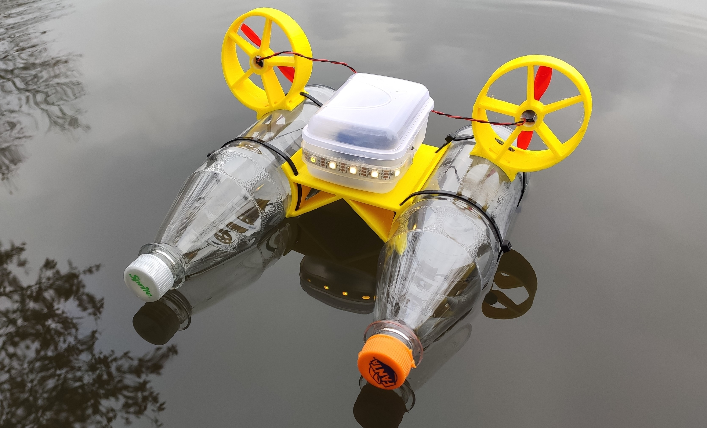

Flash your Mini Kenterprise

- Plug your Mini Kenterprise into this computer via USB.
- Use Google Chrome or Microsoft Edge (Web Serial is required - Firefox and Safari won't work).
- Click the button below and pick the right serial port.
This installs the latest firmware straight from your browser - no Arduino IDE required.
Once it's done, connect to the boat's own WiFi network (default name
MiniKenterprise_1) and open http://1.2.3.4 to drive it
and change settings (WiFi credentials, pins) later on.